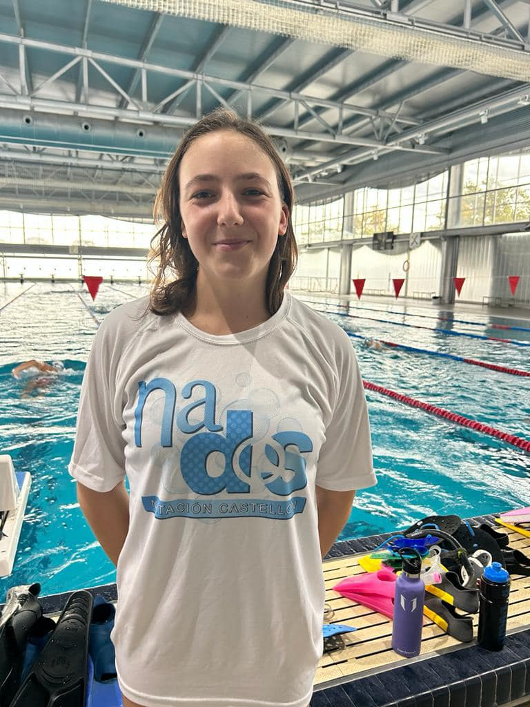

Mireia Lopez Ribas
"Mire"
Especialidad: Natación adaptada - Libre
Edad: 20 años
Club: CD Aquatic Campanar
Biografía
Mireia es una nadadora paralímpica española nacida en 2005, que compite en la categoría S10. Forma parte del Club Deportivo Aquatic Campanar y es miembro de la Federación de Deportes Adaptados de la Comunidad Valenciana (FESA).
Logros Deportivos
- Campeonato de España Absoluto por Clubes de Natación Adaptada 2021, en Lloret de Mar, obtuvo destacadas posiciones
- Mireia ha sido parte del equipo FESA, logrando la plata en la categoría por equipos en el Campeonato de España de Natación Adaptada en 2025
- 🏊 Participación en el Circuito de Aguas Abiertas FNCV